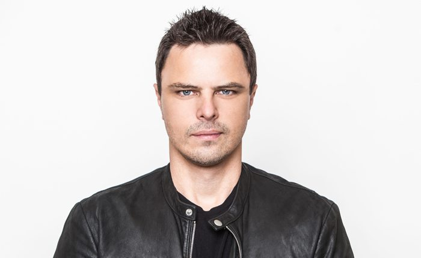

From Berlin to Miami With Markus Schulz


My whole New World Punx collaboration with Ferry Corsten came about around the same time as EDM, a time when trance was all about standing around on the dancefloor with love songs in the breakdowns. There’d be a bit of a buildup into a love song, and then a 2.5-minute love song with lyrics about who knows what. I call it “Celine Dion trance.” I remember saying to Ferry at the time, “Dude, this is not what I got into the scene for. I got into it for the groove—the rebellious side of it. Where’s the fun and edge?” That was how New World Punx came along; it was a reaction to that. We did some back-to-back sets, and it kind of exploded from there. We were trying to go against what was happening in the trance scene at the time, which was standing around on the dancefloor, making heart signs with each other.
The trance scene in the US has really gone next-level the past few years. It’s amazing to see. We really feel like we’re on a hot streak. Every show is sold out, with an amazing vibe. It’s not just EDM kids jumping up and down to every drop. And it’s a cross-generational thing; it’s the old trance family with the new one. My recent open-to-close set in Los Angeles on New Year’s Eve was a great example of that.
I played another open-to-close show at Ministry of Sound in London in February. We closed at 6am, but we could have easily gone another couple of hours. They said they’ve never seen it that full at 6am… It was a lot of fun, because a gig like that is like a blank canvas. The walls are completely still when you begin, and you can make the room resonate at the frequency that you want… There’s an art to those marathon sets, and if you know how to do it right, there’s something special in the air. For me, these kinds of gigs are how I started my DJ career—with my Arizona residencies when I was a teenager. You’re damn right that I’m gonna take pride in what I’m doing when I play an all-night show like that. I’ve got another one coming up in Berlin, just a week before I return to the US to play at Beyond Wonderland [SoCal].
Catch Markus Schulz at Beyond Wonderland SoCal the weekend of March 24 and 25.